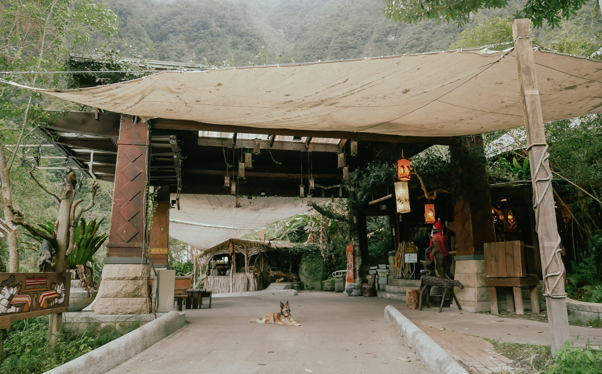

Ultralavanda

Who am I
Carlos, born in Spain in the middle of the 80s. Studied Fine Arts and Photography, worked in almost everything related to tourism, and recently became a teacher of art and visual media. Movie theaters are my safe space and pop culture is my favourite conversation topic.
About the blog
It was created on January 2025. I'd like to get back the ability to focus for a longer time and I think it'll do me good to express myself in a long-form text, as opposed to tweets or Instagram stories. I've felt overwhelmed with the noise of social media for a long time and I miss the Geocities/LiveJournal/Blogspot era, when I would visit my internet buddies' blogs, each with a different visual and literary style. I was under the impression that those sites were all gone, but a quick search on Reddit led me to Blogroll.org, where I found a mine of unique personal blogs.
As of now, this website consists of a handful of HTML files and one CSS file, all coded on Visual Studio Code and hosted on a GitHub repository. Simple static pages are as far as my coding skills can take me for now. I love blogs that keep it light and simple and I would like to follow that path. I've used WordPress before and there are features I'll miss, like RSS, but I find great satisfaction from creating something from scratch like I just did.
Why Ultralavanda:
When brainstorming for a domain name, some of the things I saw around me were my phone with a lavender case and a bottle of Ultraviolet by Paco Rabanne. Spanish it up, and there you go.